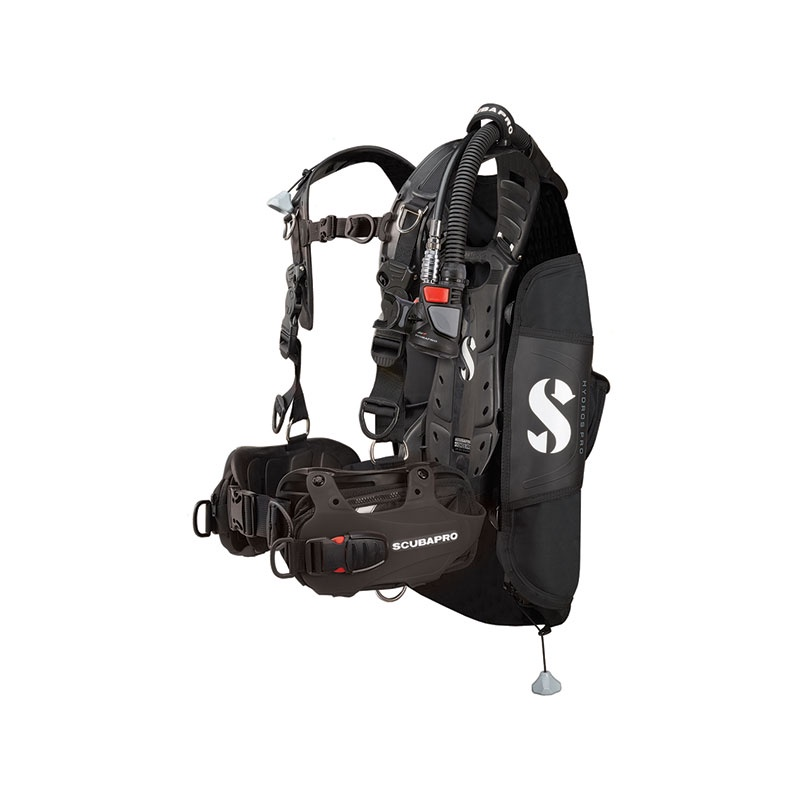

TUSA M-1010 Zensee 水肺潛水專用 無框面鏡
TUSA 開發出獨特的裙貼合技術、夠隨不同臉型提供相對應的變化，提供完美的貼合體驗。
Freedom Dry 裙邊科技大幅降，低裙邊表面的磨擦係數，提供卓越密封性並增加接觸面積，同時減少過度緊繃的皮膚張力。
圓裙違設計提升了貼合度及舒適性，並大幅減少臉部群邊壓痕。
- 3D快速調整面鏡扣
- 靜音無段式面鏡扣
- 無框設計，視野無死角
Waterproof W5 3.5MM / 5MM 水肺連身防寒衣
男/女款
由高彈力尼龍/彈性纖維與 100% 微孔 CR 氯丁橡膠製成，手工製作、粘合和盲縫。
四肢處接口PU密封及腰封，最大限度減少進水確保保暖性，水中保暖效果佳、時效長
尺寸表如下：
| Waterproof W5 連身防寒衣尺寸表 | |||
|---|---|---|---|
| 尺寸 | 身高(CM) | 體重(KG) | |
| 男生 | 2XS | 155-165 | 45-50 |
| XS | 160-170 | 50-58 | |
| S | 165-175 | 58-68 | |
| M | 170-180 | 68-68 | |
| L | 175-185 | 78-88 | |
| XL | 180-190 | 88-95 | |
| 2XL | 185-195 | 95-105 | |
| 女生 | 2XS | 150-155 | 40-45 |
| XS | 155-160 | 45-50 | |
| S | 160-165 | 50-58 | |
| M | 165-170 | 58-65 | |
| L | 170-175 | 65-70 | |
| XL | 173-177 | 74-79 | |
| 2XL | 179-185 | 78-83 | |

SCUBAPRO HYDROS PRO BCD 浮力控制背心
外層採用高強度與耐磨性的1680D尼龍(PU塗層)，氣囊則是採用840D尼龍(TPU塗層)，材質堅韌，可供高頻率使用
簡單便利的充排氣閥，充氣與排氣敏感度極高，便於水中活動 (16吋)
獨立式背架系統，搭配舒適的PP混合塑鋼材質背架襯墊 (附單條氣瓶背帶)
- 中性浮力:接近於零的本體浮力只需用更少的鉛塊,從而帶來更好的浮力控制效果
- 適用於多種潛水活動、進階潛水員來使用
- 多段尺碼可選擇、前扣式可調整胸/腰帶，適合多種身形的使用者
| SCUBAPRO HYDROS PRO BCD 浮力控制背心 尺寸表 | |||||
|---|---|---|---|---|---|
| 尺寸 | XS | S | M | L | XL |
| 身高 | 150-160 CM | 155-170 CM | 170-180 CM | 175-185 CM | 180-190 CM |
| 體重 | 45-55 KG | 55-65 KG | 65-75 KG | 75-85 KG | 85-110 KG |
| 浮力 | 12 KG(26磅) | 14 KG(31磅) | 16 KG(35磅) | 18 KG(40磅) | 20 KG(44磅) |

SCUBAPRO MK19 EVO 一級頭 + D420 YOKE 二級頭 調節器系統組
空氣平衡的第一級隔膜可提供恆定且輕鬆的氣流，不受深度、水中壓力或呼吸頻率的影響。
環境密封系統可防止水和污染物污染內部機構，並且具有極強的抗凍性。
兩個相對的高壓連接埠允許第一級向上或向下定位，並提供最佳的軟管/發射器佈局。
CRESSI THOR FINS 水肺潛水專用可調式短蛙鞋
全新的設計，促進流動效果，可穩定並增強推進力。
兩個側向孔排出負力，同時增強穩定性。
可調整鬆緊度
| CRESSI THOR FINS 蛙鞋尺寸表 | ||
|---|---|---|
| 尺碼 | XS/S | S/M |
| European (Men) | 36-38 | 39-41 |
| US (MEN) | 4-6 | 7-9 |
| US (WOMEN) | 6-7 | 8-10 |
AROPEC 5mm Neoprene長筒潛水礁鞋
AROPEC研發適合水上活動的套鞋系列，能保護雙腳不被岩石等尖銳物割傷，使你於水上活動時安心的探險，重量輕巧好攜帶。
- 高品質防滑膠料鞋底
- 鞋口處彈力好穿
- 側邊YKK#8拉鍊設計，內加擋水片，便於穿脫
- 尺寸：4~12 (USA美規)
| AROPEC 潛水礁鞋尺寸表 | |||||||||
|---|---|---|---|---|---|---|---|---|---|
| SIZE | 2XS | XS | S | SM | M | ML | L | XL | 2XL |
| US | 4 | 5 | 6 | 7 | 8 | 9 | 10 | 11 | 12 |
| EURO | 34/35 | 36 | 37/38 | 39 | 40/41 | 42 | 43/44 | 45 | 46/47 |
| CM | 22 | 23 | 24 | 25 | 26 | 27 | 28 | 29 | 30 |

Problue 橡膠配重腰帶含鉛塊 針扣扣環
140公分配重帶含不銹鋼扣具
- 可搭配1kg、2kg、3kg鉛塊做使用(環保鉛塊比較難穿入)
- 天然橡膠材質
- 氮醉需救援時扣具一拉即鬆脫
- 顏色：黑色，紅色，藍色，白色，迷彩綠
- 尺寸：F
.jpg)
GARMIN Descent MK3i GPS 潛水電腦錶 (43mm)
SUBWAVE潛聲納通訊，可與最遠30公尺外的潛伴互傳預設訊息
Descent Mk3i系列搭配T2發射器，團體潛水或多氣瓶技潛更好傳達訊息
可監測10 公尺內多達 8 位潛友的氣瓶殘壓及深度資訊